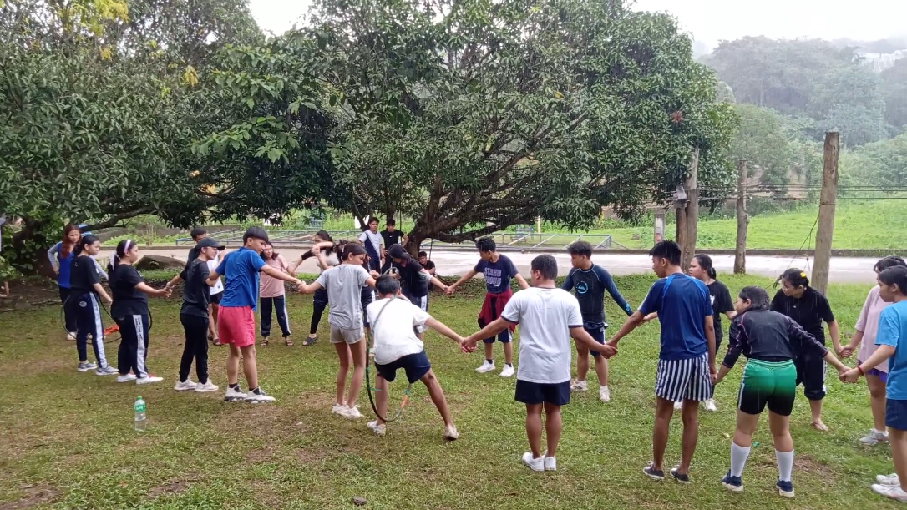
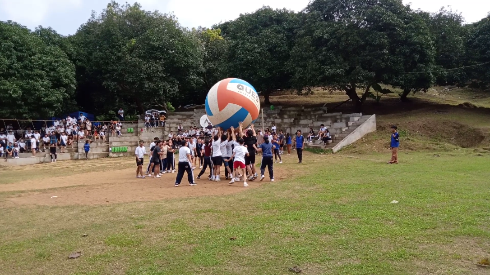
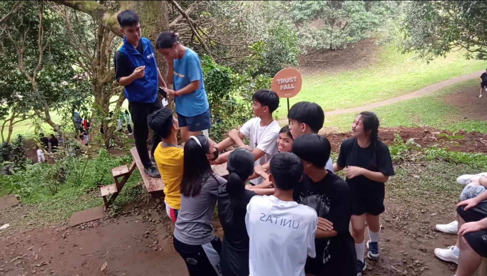
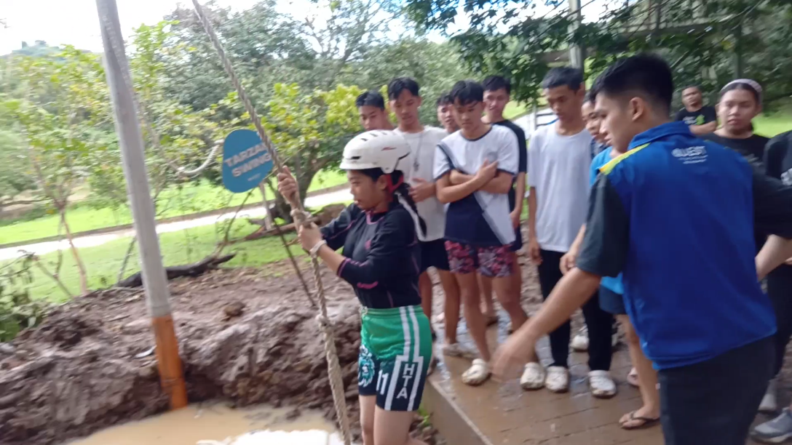
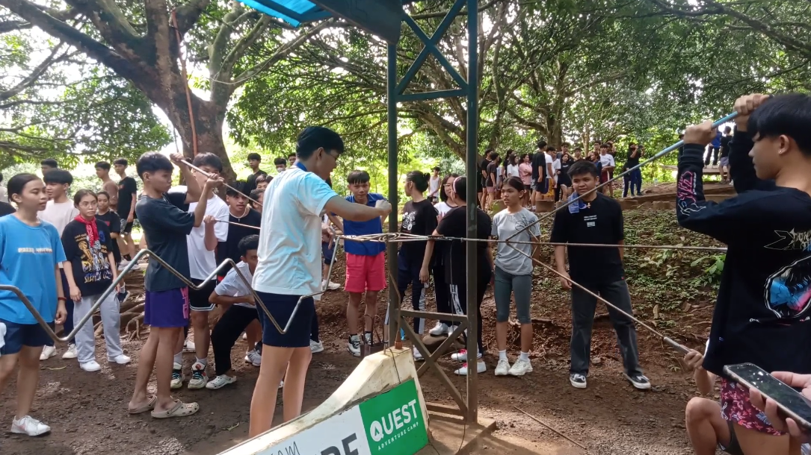
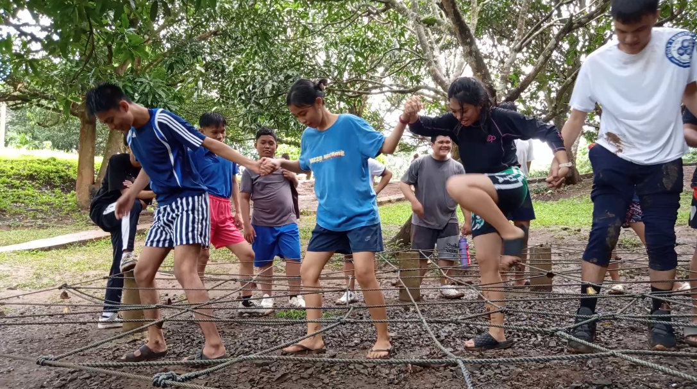
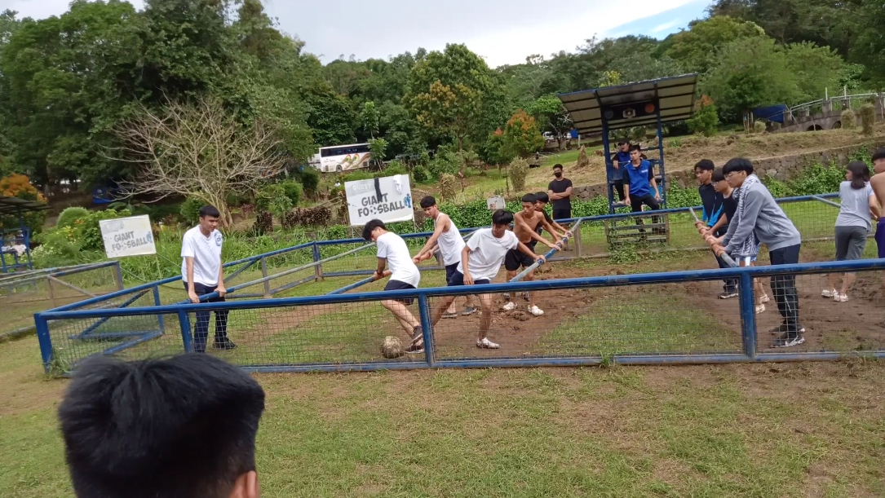

QUEST
A
D
V
E
N
T
U
R
E
CAMP
Activities
Although I barely join the activites since I was the one
who records the whole thing for the vlog which may come
up soon and its about almost 40 minutes or even an hour long?
I did enjoy them watching them do the activities whether its raining
or not because it rained that day while doing one of our activities.

Some activities are hilarious to watch like the vollyball one where
the ball is so big and its funny to watch then play.

Here's some more pictures of the activites





Thats all I can say about this Activity section!
Experiences

My Experiences on the trip for a whole day was somewhat fun
since it rained that day which makes the dirt turns into a
mud which makes of our shoes goes full dirt brown and sticky.
All in all, It's been 5 years since I last joined a fieldtrip
because the last fieldtrip we went on Enchanted Kingdom which is
yeah more fun since it's a theme park with tons of rides.
While this year's fieldtrip is more focused on team building
(even though I'm the one capturing them on video for a whole day)
still I did participate on one activity course.
Mostly my reason on why I can't really participate is that my
asthma isn't fully gone yet so I can only just capture them
and only participate on activites that doesn't require too much
movements.
Others
We swim swim after we activity and others 🙂

Here's some funny clip I've got (featuring calaguas)
In this next random video I've captured, There's 2 things
happend and first is the obvious "YAHOOO" and you find the
other one 🗿
All images and videos are taken and captured by me.